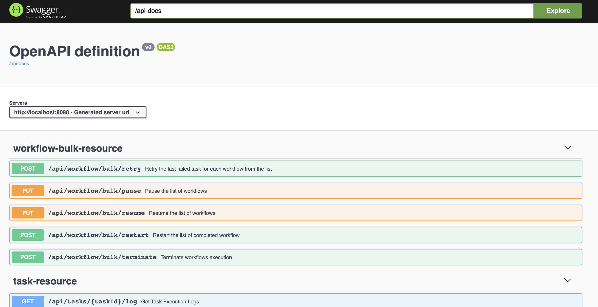

Running Conductor Using Docker
Learn how to set up Conductor on your local machine using Docker and configure the backend options.
Running Conductor using Docker Compose
This is the recommended method for setting up Conductor. The Docker Compose will bring up the following:
- Conductor API Server
- Conductor UI
- Elasticsearch (for searching workflows)
Prerequisites
- Docker Desktop
- Java (JDK) v17 or later
- Node v14 for the UI to build
- Recommended host with enough CPU and RAM to run multiple Docker containers (at least 16GB RAM)
To run Conductor using Docker:
-
Clone the Conductor repository.
-
Run Docker Compose.
Once up and running, you will see the following containers in your Docker Desktop dashboard:
- Elasticsearch
- Redis
- Conductor server (contains both the backend and UI)
If you encounter any issues running Conductor from Docker, refer to Troubleshooting below.
Accessing Conductor
To access the Conductor UI, go to http://localhost:8127.

To access the REST API Swagger documentation, go to http://localhost:8080/swagger-ui/index.html

Exiting Conductor
To shut down Conductor:
- From the terminal, exit Docker Compose using Ctrl + c keys.
- Run
docker-compose downto make sure that the images are stopped.
Default database specifications
By default, docker-compose.yaml uses config-redis.properties. The default databases used when you run Conductor with Docker Compose are:
- Elasticsearch—Default indexing backend for the UI.
- Redis—Default persistence store for workflow state and queue management.
However, the choice of backend is quite flexible and can be changed:
| Default | Alternatives |
|---|---|
| Elasticsearch |
|
| Redis |
|
Alternative persistence stores
A selection of docker-compose-*.yaml and config-*.properties files are provided to demonstrate the use of alternative persistence stores.
| File | Containers |
|---|---|
| docker-compose.yaml |
|
| docker-compose-postgres.yaml |
|
| docker-compose-postgres-es7.yaml |
|
| docker-compose-mysql.yaml |
|
| docker-compose-redis-os2.yaml |
|
| docker-compose-redis-os3.yaml |
|
Running Conductor with alternative persistence stores
To run Conductor with a different configuration, simply use the appropriate docker-compose*.yaml file.
For example, run the following command to start the server instance backed by a PostgreSQL database:
Configuring Elasticsearch
By default, Conductor comes packaged with Elasticsearch for the UI's indexing backend. While Elasticsearch is optional, disabling it will disable the search functionality in the UI.
Disabling Elasticsearch
To disable Elasticsearch:
- Set
conductor.indexing.enabled=falsein config-*.properties files. - Comment out all the configuration code related to Elasticsearch. For example:
conductor.elasticsearch.url=http://es:9200.
Re-enabling Elasticsearch
To re-enable Elasticsearch:
- Set
conductor.indexing.enabled=trueinconfig-*.propertiesfiles. - Uncomment or add in the configuration code related to Elasticsearch. For example:
conductor.elasticsearch.url=http://es:9200.
Configuring OpenSearch
Conductor supports OpenSearch 2.x and 3.x via versioned modules. Use the compose file that matches your OpenSearch version:
OpenSearch 2.x:
OpenSearch 3.x:
To configure OpenSearch in an existing setup, set the following in your config-*.properties:
conductor.indexing.enabled=true
conductor.indexing.type=opensearch2 # or opensearch3
conductor.opensearch.url=http://os:9200
conductor.opensearch.indexPrefix=conductor
conductor.opensearch.indexReplicasCount=0
conductor.opensearch.clusterHealthColor=green
For the full property reference, see the OpenSearch configuration guide.
Standalone images
You can also build and run the Conductor server and UI as standalone images.
Running the standalone server image
To run the server image:
-
Build the
conductor:serverimage from thedockerdirectory. -
Run the server image in a container named
conductor_server. -
Log in to the running container.
The API documentation should now be accessible at http://localhost:8080/swagger-ui/index.html.
Running the standalone UI image
Note
- In order for the UI to do anything useful the Conductor server must already be running on port 8080, either in a Docker container (as above), or running directly in the local JRE.
- Significant parts of the UI will also not be functional without Elastisearch.
Using the docker-compose approach alleviates these considerations.
To run the UI image:
-
Build the
conductor:uiimage from thedockerdirectory. -
Run the UI image in a container named
conductor_ui.
The UI should now be accessible at http://localhost:8127.
Troubleshooting
To troubleshoot a failed start, check the server logs located at /app/logs (default directory in dockerfile).
Here are some common issues when using Docker images and ways to resolve them:
| Issue | Fix |
|---|---|
| Not enough memory | You need at least 16 GB of memory to run everything. You can modify the Docker Compose to skip using Elasticsearch if you have no option to run this with your memory options. Refer to Disabling Elasticsearch for more information. |
| Elasticsearch fails to come up in arm64-based CPU machines | Elasticsearch v6.8.x does not have an arm64-based Docker image. Make sure you are using Elasticsearch v7 and later. |
| Server times out at start up because Elasticsearch remains in Yellow health | By default, the Conductor server requires Elasticsearch to be in Green state so that it can run when indexing is enabled. To work around this, use one of the following solutions:
|
Changes in config-*.properties files are not taking effect |
The configuration files are copied into the Docker image when it is built. For the changes to take effect, you must rebuild the image. For best practices, you can mount the configuration files as a Docker volume instead to reflect the new changes automatically without rebuilding. |
| Unable to access the Conductor server on port 8080 | It may takes some time for Conductor server to start. Wait before trying again, and if it is still not loading, check the server log for errors. |